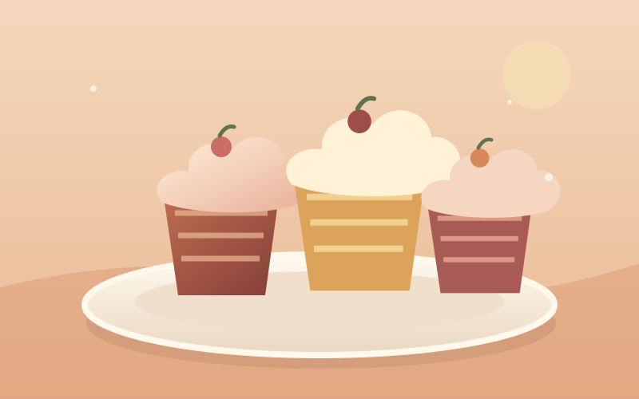
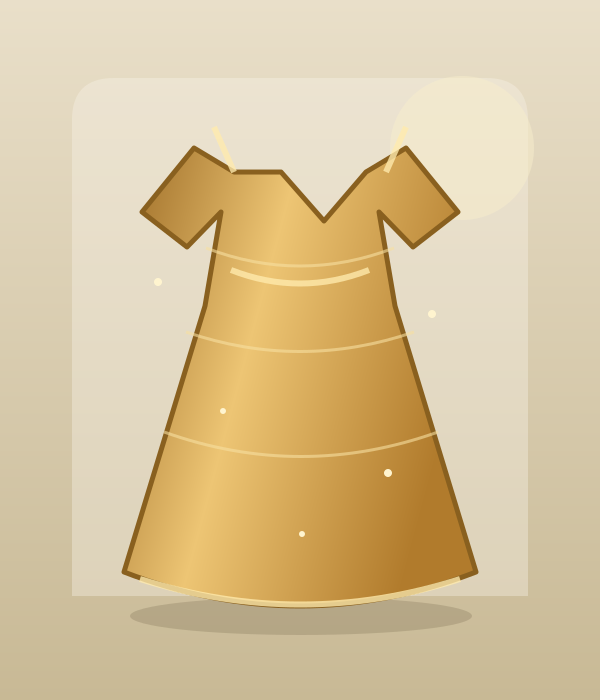

01 / HOSPITALITYZeeshan Bistro
A warm restaurant landing page with a working reservation form.
HI, I'M Zeeshan Jamshed · FRONTEND DEVELOPER IN TRAINING
I’m building my frontend skills by turning lessons and prototypes into browser experiences with HTML, CSS, and JavaScript. Explore a demo, then read its case study to see how it works and what I’d improve next.
THE COLLECTION
Try each browser demo, then open its case study for the decisions, technical details, and current limitations.

01 / HOSPITALITYA warm restaurant landing page with a working reservation form.

02 / COMMERCEA boutique storefront with filters, favourites and a local cart.
A calm field-planning demo inspired by an existing crop advisory prototype.
A friendly task planner with filters and tasks saved in the browser.
A LITTLE ABOUT ME
I’m Zeeshan, a frontend developer in training. I learn by building small, complete projects: structuring a page, making it adapt to different screens, and adding interactions people can understand.
This collection grows from my HTML and CSS practice pages and earlier prototypes. The case studies explain what each demo does, the choices behind it, and what still needs work. These are learning projects, not live commercial services.
A PLACE TO PRACTISE
The learning library keeps the HTML and CSS exercises that led to these projects, grouped in one place.